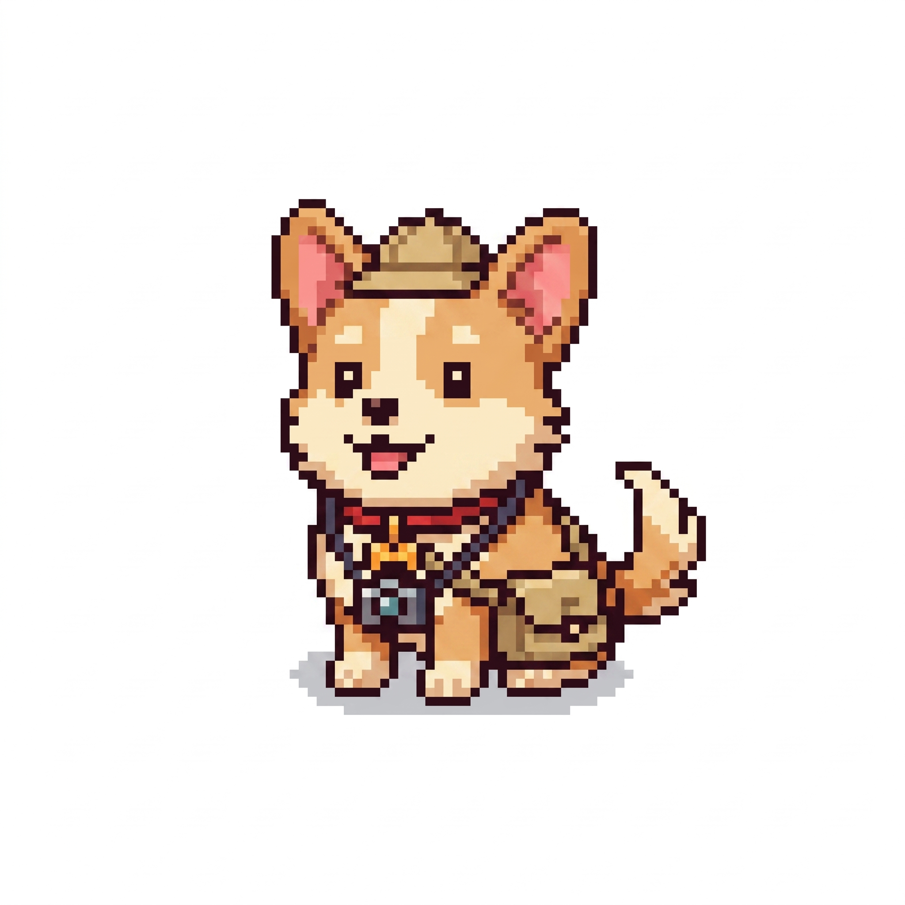
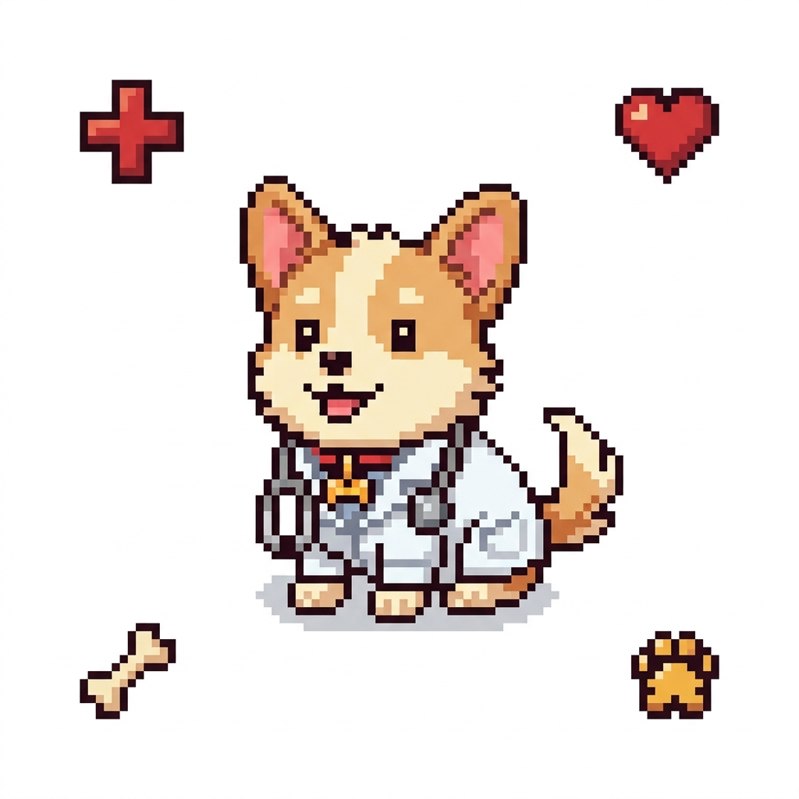

AI Feature Sets
Developer Tools

AI Paved Roads
Cloud Workspaces and a Skill Marketplace, now used by ~50% of Intuit's developers.

AI-Native Observability
An in-house observability platform saving $1.6M/year over a vendor tool.
ML Open Source: Harp
New docs for Harp, an open-source ML library for large-scale clustering.